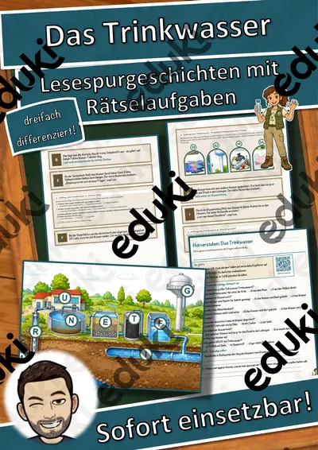
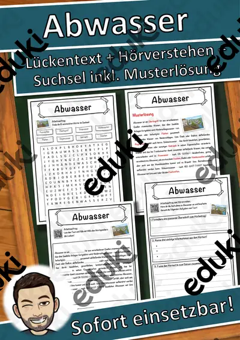
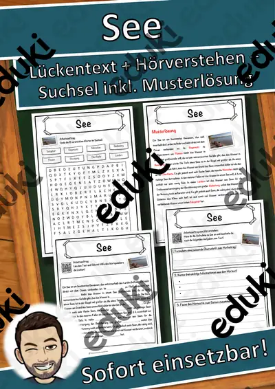

Wasser, Seen und Flüsse: Arbeitsblätter für Klasse 2–6 (Sachunterricht)
Gewässer begegnen Kindern am Schulweg, im Garten und im Urlaub. Der Unterricht arbeitet meist vom Bach über den Fluss zum Meer, fragt nach sauberem Trinkwasser und nach dem Schutz von Feuchtgebieten.
Zum Themenkern zählen Quelle, Fluss und Mündung und See und Teich. Als Vertiefung bieten sich Trinkwasser und Kläranlage an, am Ende steht oft Moor.
In den Lehrplänen der Länder ist das Thema im Fach Sachunterricht verankert, meist in den Klassen 2 bis 6. Die Schülerinnen und Schüler unterscheiden stehende und fließende Gewässer und erklären, wie Wasser aufbereitet wird.
Ob Vertretungsstunde, Stationenarbeit oder Hausaufgabe: Die Arbeitsblätter zu Wasser, Seen und Flüsse lassen sich flexibel einsetzen, etwa mit Quelle als Auftakt und Moor als Abschluss. Musterlösungen sparen die Korrekturzeit. Zur Differenzierung eignen sich die Lesespurgeschichten mit ihren drei Niveaustufen.
Aus unserem Katalog gehören 16 Materialien zu diesem Thema, darunter Das Trinkwasser, Das Geheimnis des Teichs und Abwasser Lückentext mit Wortspeicher. Der Bestand umfasst 2 Lesespurgeschichten und 14 Lückentexte mit Hörverstehen und reicht über Klasse 5–7. Eine kleine Gewässerprobe vom Schulteich unter der Lupe verbindet Theorie und Beobachtung, bevor Steckbriefe geschrieben werden.
Das gehört zum Thema
Passende Arbeitsblätter und Materialpakete

Das Trinkwasser – Lesespurgeschichte mit Rätselaufgaben (Klasse 6)

Das Geheimnis des Teichs – Lesespurgeschichte mit Rätselaufgaben (Klasse 5)

Abwasser Lückentext mit Wortspeicher Hörverstehen und Suchsel

See Lückentext mit Wortspeicher Hörverstehen und Suchsel

Wasser Lückentext mit Wortspeicher Hörverstehen und Suchsel

Trinkwasser Lückentext mit Wortspeicher Hörverstehen und Suchsel

Teich Lückentext mit Wortspeicher Hörverstehen und Suchsel

Neusiedler See Lückentext mit Wortspeicher Hörverstehen und Suchsel

Grundwasser Lückentext mit Wortspeicher Hörverstehen und Suchsel

Große Seen Lückentext mit Wortspeicher Hörverstehen und Suchsel

Gewässer Lückentext mit Wortspeicher Hörverstehen und Suchsel

Flussdelta Lückentext mit Wortspeicher Hörverstehen und Suchsel

Moor Lückentext mit Wortspeicher Hörverstehen und Suchsel

Kläranlage Lückentext mit Wortspeicher Hörverstehen und Suchsel

Johann Sebastian Bach Lückentext mit Wortspeicher Hörverstehen und Suchsel

Bach Lückentext mit Wortspeicher Hörverstehen und Suchsel
Häufige Fragen
Für welche Klassenstufe passen die Arbeitsblätter zu Wasser, Seen und Flüsse?
Der Schwerpunkt liegt auf Klasse 6; insgesamt deckt die Auswahl (16 Titel) Klasse 5–7 ab. In der Beschreibung jedes Materials steht die empfohlene Stufe.
Welche Inhalte decken die Materialien zu Wasser, Seen und Flüsse ab?
Behandelt werden unter anderem Quelle, Fluss und Mündung, See und Teich und Trinkwasser. Welche Aspekte in Ihrer Klasse Vorrang haben, richtet sich nach dem Lehrplan Ihres Bundeslandes.
Wie setze ich Wasser, Seen und Flüsse im Unterricht ein?
Eine kleine Gewässerprobe vom Schulteich unter der Lupe verbindet Theorie und Beobachtung, bevor Steckbriefe geschrieben werden. Danach genügt meist ein Material als Einstieg und eines zum Üben.
Mehr Material nach Fach und Klasse
- Alle Materialien Biologie
- Arbeitsblätter Biologie Klasse 2
- Arbeitsblätter Biologie Klasse 3
- Arbeitsblätter Biologie Klasse 4
- Arbeitsblätter Biologie Klasse 5
- Arbeitsblätter Biologie Klasse 6
- Unterrichtsmaterial Klasse 2
- Unterrichtsmaterial Klasse 3
- Unterrichtsmaterial Klasse 4
- Unterrichtsmaterial Klasse 5
- Unterrichtsmaterial Klasse 6
Verwandte Lehrplanthemen
- Bauernhof und Nutztiere (Sachunterricht, Klasse 1–4)
- Berufe und Berufswahl (Sachunterricht, Klasse 1–10)
- Dinosaurier und Urzeit (Sachunterricht, Klasse 1–5)
- Geld und Konsum (Sachunterricht, Klasse 2–10)
- Gesunde Ernährung (Sachunterricht, Klasse 1–8)